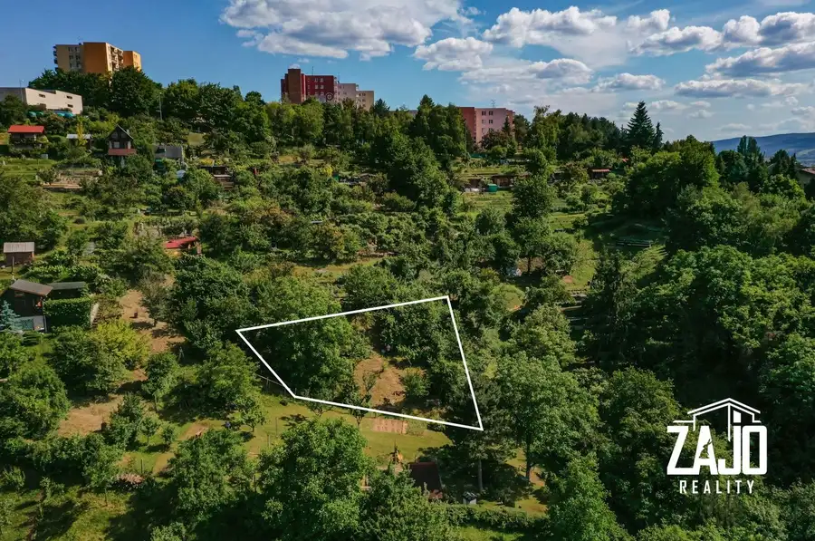
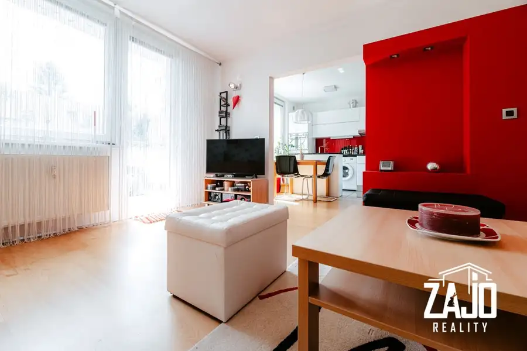
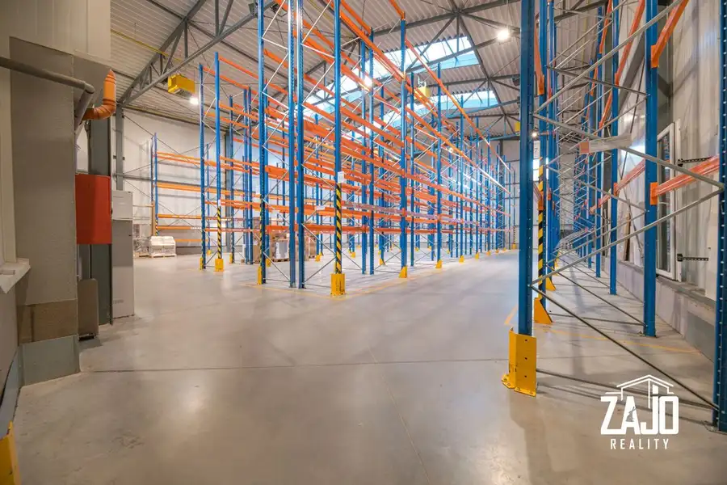

NA PREDAJ | 5 izbový dom s dvoj garážou, I. Olbrachta - Trenčín
Trenčín
- Plocha335 m²
- StavNovostavba
- VlastníctvoOsobné
- Energetická triedaA
O nehnuteľnosti
Ponúkame vám vo výhradnom zastúpení klienta luxusný 5 izbový dom situovaný na konci v súkromnej časti rezidenčnej štvrte I. Olbrachta. Dominantou celého domu je hlavne jeho svetlosť a priestrannosť a jednoduchosť. Ihneď po prvej návšteve domu je každému zrejmé, že veľký dôraz pri navrhovaní domu bol kladený hlavne na súkromie a bezpečie majiteľov. Dom je síce súčasťou dvojdomu ale práve to umožňuje dostatok súkromia a priestoru v tomto átriovom tipe domu. Po tom ako sa otvorí brána na konci ulice rezidenčnej štvrti Ivana Olbrachta, vstúpite do súkromnej časti štvrte, kde sa nachádzajú 3 rodinné domy a dva prázdne pozemky s plánovanou zástavbou, čo zaručuje maximálny počet domov tejto súkromnej koncovej ulici na päť. Súkromie uzavretej ulice isto uvítajú hlavne rodiny s deťmi, aj keď na pocit, že po každom pohybe okolo domu nemusíte zamykať každé dvere si rýchlo zvykne každý. Vstup do domu je cez prestrešený vchod vedľa priestrannej dvoj garáže. Na prízemí dom pozostáva zo vstupnej chodby, technickej miestnosti s práčovňou, kuchyne, špajzy, spálne s rodičovskou kúpeľnou, obývacej izby s jedálenskou časťou a terasy . Otvoreným vnoreným schodiskom v obývacej izbe sa dostanete na poschodie, kde sú rozmiestnené tri detské izby a dve kúpeľne s WC. Z chodbovej časti a z kúpeľne je vstup na vrchnú terasu, kde sa nachádzajú vyvýšené záhony a zapustená vírivka. Súčasťou domu je priestranná dvoj garáž vybavená segmentovou bránou na diaľkové ovládanie. Celková výmera domu vrátane garáže je 335m2, pričom prízemie domu má rozlohu 215m2 a poschodie 120m2. Na pozemok v átriu domu sa môžete dostať nielen priamo z obývacej izby, kuchyne a spálne, ale aj dvojkrídlovými dverami v garáži. Na pozemku sa nachádza bazén s proti prúdom o rozmere 8x4m a hĺbkou 1,5m. Celková výmera pozemku je 551m2, z čoho 251m2 tvorí záhrada v átriu domu. Pozemok domu rovnako ako samotný dom je navrhnutý v minimalistickom štýle s cieľom čo najmenšej údržby. Zhrnutie a vybavenie domu: Dom je súčasťou novo budovaného komplexu stavieb rodinných a bytových domov nazývaných Rezidenčná štvrť Olbrachtova.Kolaudačné rozhodnutie bolo vydané v októbri 20145 izbový dom s dvoj garážou je rozdelený do dvoch podlaží bez podpivničeniaTehlová stavba (44 ) bez zateplenia s betónovou stropnou doskou ukončená s pultovou strechouDispozične dom pozostáva:1.np. Vstupná chodba, technická miestnosť, kuchyňa, komora, spálňa, kúpeľňa, obývacia izba, garáž a vonkajšie terasy.V technickej miestnosti je umiestnené umývadlo a WC, elektrický zásobníkový ohrievač, ovládacia jednotka solárneho ohrevu a rekuperačnej jednotky. Kuchynská linka je rozdelená do troch častí vrátane stredového ostrovčeka.Súčasťou kuchynskej linky sú zabudované spotrebiče: elektrická trúba, parná trúba, elektrická varná doska, digestor, umývačka riadu, chladnička s mrazničkou značky Siemens a vstavaným smetným košom.Pracovná doska brúsený kameň 2,5cm, kuchynská linka navrhnutá na mieru v kvalitnom prevedení.Zabudovaný centrálny vysávač v lište pod kuchynskou linkou a pri vchodových dverách. Kúpeľňa je vybavená sprchovým kútom so zabudovanou parnou saunou. Všetky kúpeľne sú vybavené japonskými vyhrievanými toaletami.Otvorená a svetlá obývacia izba s krbom a vnútorným schodiskom na poschodie.Vstup na terasu z kuchyne, obývacej izby aj spálne. Masívna presklená obývačková stena s posuvným otváracím systémom.Garáž umožňuje parkovanie dvom osobným automobilom, uzatvorená segmentovou garážovou bránou na diaľkové ovládanie. V garáži je zabudovaný centrálny domáci vysávač a zmäkčovač vody.2.np. Pozostáva zo stredovej chodby, 3x spálňa ( detská Izba), 2x kúpeľňa s WC, vstup na terasu so zabudovanou vírivkou a vyvýšenými záhonmi. Na chodbe je zabudovaný zhod prádla do technickej miestnosti na prízemí domu. Výmera domu: 1np. 215m2 vrátane gáráže 2np. 120m2 Spolu: 335m2Pozemok rovinatý o výmere 551m2 + podiel na spoločnej prístupovej ceste pre 5 domovOkná a dvere: Hliníkové okná s trojsklom a hliníkovými žalúziami s ovládaním.Na prízemí domu sú okná vybavené nepriestrelnou fóliou.Technológie: -Elektrické podlahové kúrenie-Rekuperácia a klimatizácia v každej miestnosti -Centrálny domáci vysávač-Centrálny zhod prádla do technickej miestnosti ( práčovne) -Zmäkčovač vody s filtrom na pitnú vodu-Vŕtaná studňa do hĺbky 18m, napojená na celý dom, primárne využívaná pre potreby bazénu.-Technická šachta na záhrade s pieskovou filtráciou, čerpadlom a závlahou-zásuvku na napájanie elektromobilov v garáži-Vyhrievaná prístupová cesta pred garážou-Wifi sieť a TV v každej miestnosti-Elektrický vrátnik na spoločnú prístupovú bránuRelax: -Zabudovaná vírivka na hornej terase-Bazén 8x4, hĺbka 1,5m s proti prúdom-Vonkajšia terasa s letnou kuchyňou vybavená grilom a umývadlom-Sprchový kút s parnou saunou v rodičovskej kúpeľni-Umelá horolezecká stenaOrientácia izieb: Spálne na východ, Obývacia izba na juhozápadZáhrada a zeleň: -Upravená záhrada navrhnutá tak aby bola bezúdržbová -Automatická závlaha-Robotická kosačka-Vyvýšené záhony na vrchnej terase-Zelená strecha nad garážou Bezpečnosť: -Bezpečnostné čidlá-Kamerový systém-Alarm-Nepriestrelná fólia na oknách na prízemí domuOstatné vybavenie domu:-Dom sa predáva vrátane vybavenia okrem obrazov. -Vstavané skrine na chodbách a v izbách-Podlahy domu sú prevažne keramické, schodisko domu je monolitické s obkladom z dubového masívu a zábradlím z bezpečnostného sklaViac informácii vám veľmi rád poskytnem osobne.Nami uvedená cena je vrátane poplatku za sprostredkovanie realitnou kanceláriou, vrátane právneho servisu a všetkých poplatkov, ako overenie podpisov a vklad kúpnej zmluvy do katastra nehnuteľnostíSme realitná kancelária, ktorá si zakladá na korektnom jednaní s klientom. V našom záujme je prvoradá spokojnosť ako predávajúceho tak i kupujúceho. Ak si chcete dohodnúť prehliadku, prípadne máte akékoľvek doplňujúce otázky, informácie Vám rád zodpoviem na tel. č. : 0907980436, emailovej adrese: zajac@zajoreality.sk prípadne v našej kancelárii so sídlom v Trenčíne, budova KERAMOPROJEKTU, 2 poschodie.Tomáš Zajac – ZAJO Reality, s.r.o.
Parametre
| Bezpečnosť | Bezpečnostné dvere, Alarm |
|---|---|
| Doprava | MHD |
| Druh | Rodinný dom |
| Dátum zverejnenia | 16. 7. 2022 |
| Energetický certifikát budovy | A |
| Plocha pozemku | 551 m² |
| Počet garáží | 1 |
| Počet izieb / miestností | 5 |
| Počet kúpeľní | 4 |
| Počet nadzemných podlaží | 2 |
| Prístupová komunikácia | Asfaltová |
| Rok výstavby | 2014 |
| Stav nehnuteľnosti | Novostavba |
| Telekomunikácie | Internet |
| Terás | 2 |
| Terén pozemku | Rovinatý |
| Typ | Predaj |
| Typ konštrukcie | Tehlová |
| Vlastníctvo | Osobné |
| Voľnočasové aktivity | Turistika, Cykloturistika |
| Vybavenie | Terasa, Garáž, Technická miestnosť, Vonkajší krb, Bazén, Krb, Fitnes, Sauna, Altánok / posedenie, Šatníkové skrine |
| Vykurovanie | Podlahové, Krb, Klimatizacia |
| Zariadenie | Zariadené kompletne |
| Zastavaná plocha | 216 m² |
| Úžitková plocha | 335 m² |
Kde to je


Mohlo by Vás zaujímať

PozemokNové4 30 000 €NA PREDAJ | Záhrada nad Partizánskou ul. v Trenčíne Trenčín 496 m² NA PREDAJ | Záhrada nad Partizánskou ul. v TrenčíneSpol. ZAJO Reality vám vo výhradnom zastúpení ponúka záhradu v záhradkárskej osade Vašíčkové sady.…
BytNové10 139 800 €NA PREDAJ Byt 1+1 s balkónom, Karpatská ul. v Trenčíne Trenčín 1-izbový34 m²2. podlažie PREDAJ Byt 1+1 s balkónom, Karpatská ul. v TrenčínePonúkame vám na predaj jednoizbový byt vo vyhľadávanej lokalite v Trenčíne. Byt o výmere 34m2…
Komerčné priestoryNové10 Cena dohodouTOP ponuka i na prenájom i vykurované skladové priestory i areál pima i Trenčín Trenčín 1445 m² Ak hľadáte reprezentatívne, bezpečné a dokonale prístupné skladové priestory, ste na správnom mieste.V uzavretom areáli PIMA v Trenčíne ponúkame na…